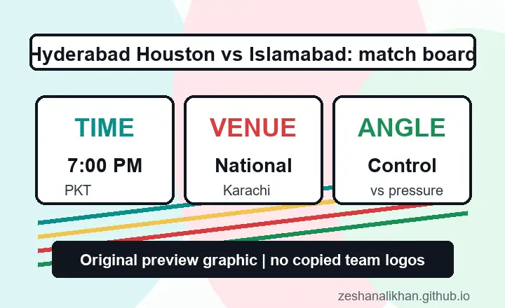

Specific search intent
The full team-name query is long, but that can make it easier for a focused page to answer the exact fixture question.
Hyderabad Houston Kingsmen and Islamabad United meet at National Stadium, Karachi, on Friday, April 24, 2026. The official HBL PSL match center lists a 7:00 PM PKT start, making this a clear match-intent page for fans checking timing, venue, team context, and the practical story before the first ball.
This is not the loudest PSL fixture on brand history alone, but it is useful for search because the Hyderabad Houston Kingsmen name is newer and more specific. Fans searching it usually want clean basics first: date, start time, venue, and what kind of match to expect.
My read is that Islamabad enter with the more established PSL identity, while Hyderabad Houston need a match that feels organised from the first over. That makes the opening phases important because a calm first ten overs can stop the game from becoming one-way traffic.

The full team-name query is long, but that can make it easier for a focused page to answer the exact fixture question.
Islamabad United are usually searched with stronger PSL history, so the preview should explain the control side of the matchup.
National Stadium gives the page another important entity: venue, city, and timing for fans checking the match window quickly.
Hyderabad Houston Kingsmen vs Islamabad United is listed as HBL PSL 11 Match 36 at National Stadium, Karachi, with a 7:00 PM PKT start on Friday, April 24, 2026.
More from our sites
This page sits inside a wider set of live guides, recaps, and utility pages. Use the short list below when you want a few direct jumps without loading a crowded directory page first.
More from our sites
This page sits inside a wider set of live guides, recaps, and utility pages. Use the short list below when you want a few direct jumps without loading a crowded directory page first.